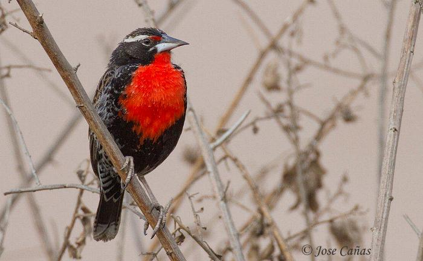
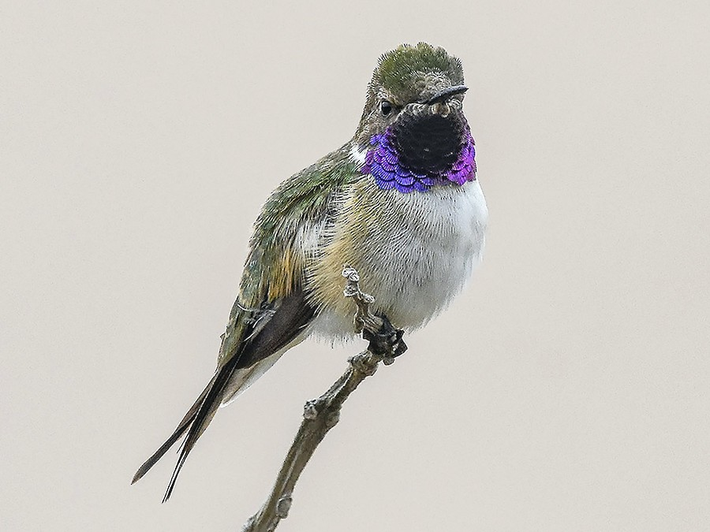
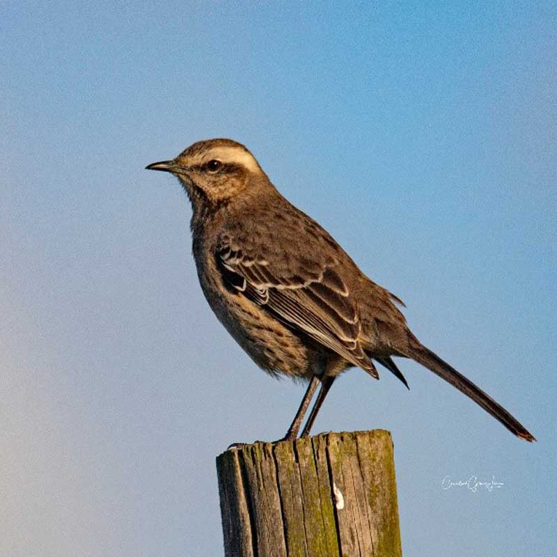

ESPECIES DE PÁJAROS EN CHILE
Bienvenidos a Especies de Pájaros en Chile: Tesoros alados de nuestra biodiversidad
Chile es un país privilegiado en cuanto a biodiversidad, y sus aves no son la excepción.
Desde el altiplano andino hasta los bosques australes, más de 500 especies de aves habitan nuestros cielos,
humedales, costas y montañas. Algunas son endémicas —es decir, no existen en ningún otro lugar del mundo—, lo
que convierte a Chile en un territorio único para la observación y el estudio de estas fascinantes criaturas.
Las aves cumplen roles ecológicos esenciales, como la polinización, el control de plagas y la dispersión de semillas,
siendo indicadores naturales de la salud de los ecosistemas. Su presencia enriquece nuestra cultura,
paisajes y conexión con la naturaleza.
Sin embargo, muchas especies enfrentan amenazas crecientes debido a la pérdida de hábitat, el cambio climático,
la contaminación y la acción humana. Algunas, como el Gaviotín chico o el Canquén colorado, están en peligro de extinción,
y requieren de nuestra atención y compromiso para su conservación.
Este sitio busca ser un espacio de conocimiento, apreciación y protección de las aves chilenas. Aquí encontrarás
fichas informativas, fotografías, mapas de distribución y consejos para observar aves de forma responsable. Te invitamos
a descubrir, aprender y sumarte al cuidado de estas maravillosas embajadoras aladas de nuestro país.
Chucao (Scelorchilus rubecula)

El chucao es un ave forestal muy vocal, típica del sur de Chile, reconocida por su canto fuerte y territorial.
Canto del Chucao| Zona de Chile | Sur (desde el Biobío hasta Chiloé) |
| Peregrinaje | No migratorio |
| Tamaño | 18-20 cm |
| Forma | Compacta, con cola corta y erguida |
| Tipo de canto | Fuerte, repetitivo y territorial |
| Color | Pecho rojo, espalda parda |
| Comportamiento de vuelo | Terrestre, raramente vuela |
Loica (Sturnella loyca)
La loica se reconoce fácilmente por su pecho rojo brillante y su canto melódico en zonas abiertas.
Canto de la Loica| Zona de Chile | Centro y sur de Chile |
| Peregrinaje | Parcialmente migratoria |
| Tamaño | 25 cm aprox. |
| Forma | Mediana, robusta, pico recto |
| Tipo de canto | Melódico y claro |
| Color | Rojo en pecho, marrón en dorso |
| Comportamiento de vuelo | Vuelo directo y bajo |
Picaflor de Arica (Eulidia yarrellii)
Es el colibrí más pequeño de Chile y uno de los más amenazados. Solo habita en el norte extremo del país.
Canto del Picaflor de Arica| Zona de Chile | Arica y Parinacota |
| Peregrinaje | No migratorio |
| Tamaño | 7-8 cm |
| Forma | Pequeño, con pico largo y fino |
| Tipo de canto | Agudo y suave |
| Color | Verde metálico con reflejos púrpuras |
| Comportamiento de vuelo | Rápido y suspendido en el aire |
Rayadito (Aphrastura spinicauda)
Ave inquieta que se desplaza entre ramas. Su cola larga y rayas blancas lo hacen fácil de reconocer.
Canto del Rayadito| Zona de Chile | Centro y sur, hasta Tierra del Fuego |
| Peregrinaje | No migratorio |
| Tamaño | 13-15 cm |
| Forma | Delgado, con cola larga y puntiaguda |
| Tipo de canto | Agudo y rápido |
| Color | Café con rayas blancas en el rostro y pecho |
| Comportamiento de vuelo | Ágil entre ramas |
Tiuque (Milvago chimango)
Un ave rapaz muy adaptable que suele encontrarse en ciudades y campos abiertos.
Canto del Tiuque| Zona de Chile | De Arica a Magallanes |
| Peregrinaje | No migratorio |
| Tamaño | 35-40 cm |
| Forma | Grande, con pico curvado |
| Tipo de canto | Ronco y repetitivo |
| Color | Café claro con manchas oscuras |
| Comportamiento de vuelo | Planeador, oportunista |
Cachudito (Anairetes parulus)
Pequeña ave inquieta con un penacho distintivo en la cabeza y canto chispeante.
Canto del Cachudito| Zona de Chile | Desde Atacama hasta Magallanes |
| Peregrinaje | No migratorio |
| Tamaño | 11 cm |
| Forma | Redondeado con penacho erguido |
| Tipo de canto | Corto y vibrante |
| Color | Grisáceo con líneas blancas y negras |
| Comportamiento de vuelo | Saltos rápidos entre ramas |
Pidén (Pardirallus sanguinolentus)

Ave tímida de humedales y juncales, más fácil de oír que de ver.
Canto del Pidén| Zona de Chile | Centro-sur |
| Peregrinaje | No migratorio |
| Tamaño | 28-30 cm |
| Forma | Alargado, con patas largas |
| Tipo de canto | Fuerte, en serie |
| Color | Pardo oscuro con tonos rojizos |
| Comportamiento de vuelo | Terrestre, vuela poco |
Tenca (Mimus thenca)
Ave de comportamiento curioso y gran habilidad para imitar cantos de otras aves.
Canto de la Tenca| Zona de Chile | Desde Atacama hasta el Maule |
| Peregrinaje | No migratorio |
| Tamaño | 28 cm aprox. |
| Forma | Estilizada, pico ligeramente curvado |
| Tipo de canto | Variado e imitador |
| Color | Gris con vetas claras |
| Comportamiento de vuelo | Vuelo corto, se desplaza en tierra |
Cóndor (Vultur gryphus)

Majestuosa ave carroñera y símbolo nacional de Chile.
Canto del Cóndor| Zona de Chile | Regiones montañosas y cordilleranas |
| Peregrinaje | No migratorio |
| Tamaño | Hasta 130 cm de envergadura |
| Forma | Gran tamaño, cabeza y cuello desnudos |
| Tipo de canto | Silbidos y sonidos guturales |
| Color | Negro con detalles blancos y cuello blanco |
| Comportamiento de vuelo | Planeo prolongado en corrientes térmicas |